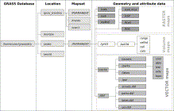
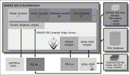
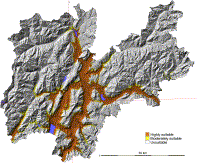

GRASS GIS: A multi-purpose open source GIS

- a Biodiversity and Molecular Ecology Department, IASMA Research and Innovation Centre, Fondazione Edmund Mach, Via E. Mach 1, 38010 S. Michele all'Adige (TN), Italy
- b Department of Marine Science, University of Otago, P.O. Box 56, Dunedin, New Zealand
- c Department of Mapping and Cartography, Faculty of Civil Engineering, Czech Technical University in Prague, Thakurova 7, 166 29 Prague, Czech Republic
- Received 20 November 2010. Revised 19 November 2011. Accepted 26 November 2011. Available online 20 December 2011.
Software availability
1. Introduction
2. Background
3. Software capabilities
4. Design and technical developments
5. Environmental applications
6. Conclusions
Acknowledgements
References
Abstract
The GIS software sector has developed rapidly over the last ten years. Open Source GIS applications are gaining relevant market shares in academia, business, and public administration. In this paper, we illustrate the history and features of a key Open Source GIS, the Geographical Resources Analysis Support System (GRASS). GRASS has been under development for more than 28 years, has strong ties into academia, and its review mechanisms led to the integration of well tested and documented algorithms into a joint GIS suite which has been used regularly for environmental modelling. The development is community-based with developers distributed globally. Through the use of an online source code repository, mailing lists and a Wiki, users and developers communicate in order to review existing code and develop new methods. In this paper, we provide a functionality overview of the more than 400 modules available in the latest stable GRASS software release. This new release runs natively on common operating systems (MS-Windows, GNU/Linux, Mac OSX), giving basic and advanced functionality to casual and expert users. In the second part, we review selected publications with a focus on environmental modelling to illustrate the wealth of use cases for this open and free GIS.
Keywords
- GIS;
- GRASS;
- OSGeo;
- Open source;
- Spatial analysis;
- Remote sensing
Abbreviations
- GRASS, Geographical Resources Analysis Support System;
- GIS, Geographic Information System;
- GPL, General Public License;
- OSGeo, Open Source Geospatial Foundation
Figures and tables from this article:
- 
Fig. 1. Structure of GRASS GIS project data base (“location”).
- View Within Article
")
- 
Fig. 2. Architecture of GRASS GIS 6.4: Core system, related libraries and external file/database support.
- View Within Article
")
- 
Fig. 3. Potential distributional areas of Aedes albopictus (tiger mosquito) in Trentino, Italy, based on an analysis with GRASS GIS, cited from (Roiz et al., 2011).
- View Within Article
")
Table 1. GRASS GIS command structure.
- View Within Article

- Corresponding author. Tel.: +39 0461 615570; fax: +39 0461 650956.
Copyright © 2011 Elsevier Ltd. All rights reserved.


")